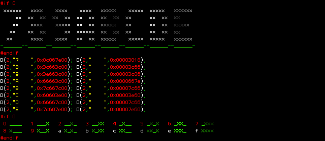
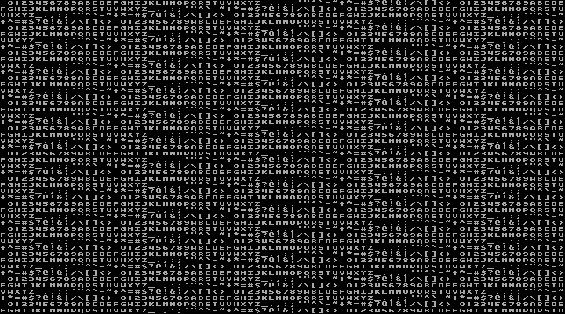
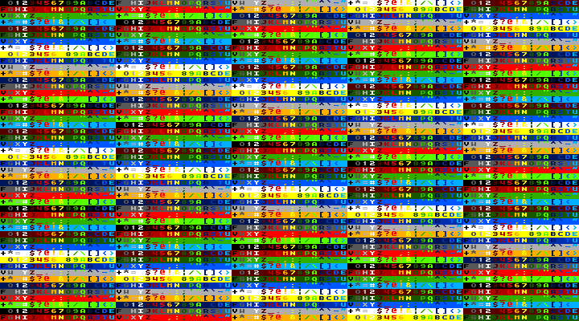
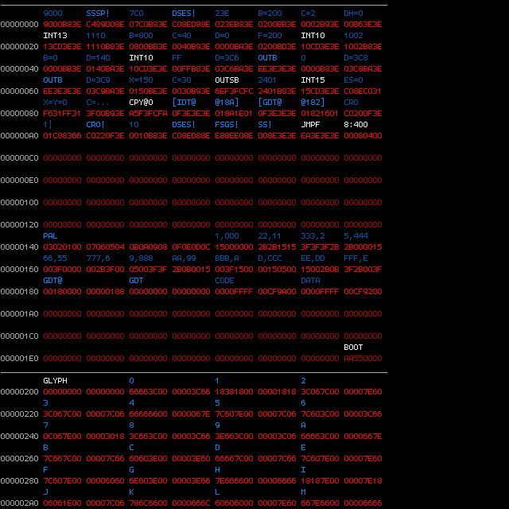

20150426 - Source-Less Programming : 5
Boot Loader Bring-up
Managed to get the boot loader done, which includes the following steps,
(1.) Move the stack seg:pointer (since next step overwrites it).
(2.) Use BIOS to read the other 62 512-byte sectors for the first track.
(3.) Use BIOS to switch to 80x50 text mode and load custom character glyphs.
(4.) Use BIOS to set EGA text palette to 0-15 with 0 for overscan.
(5.) Program VGA palette registers for those 16 colors.
(6.) Use BIOS to enable A20.
(7.) Turn off interrupts, and relocate the image's 63 sectors to zero.
(8.) Load zero entry IDT, minimal 3 entry GDT.
(9.) Enable protected mode and jump to the 3rd sector.
The 2nd 512-byte sector contains the 8x8 character bitmaps for the first 64 characters.
The majority of the time was spent making a nice font,
getting colors the way I wanted,
and prototyping editor look and feel (without building it).
Didn't feel like fully hand assembling 16-bit x86 machine code for the boot loader,
so I used NASM and hexdump to accellerate the process
(to provide machine code I could pad out to 32-bit alignment).
Also wrote a quick C based tool to bootstrap the process of building the loader.
Something which would enable me to easily build out an annotated image,
and show a print out in the console of what I'd be seeing in the editor.
Here is a shot of a bit of the scratch C code I used to make the font,

Here is a shot in QEMU of the loader displaying the font,

And another shot from QEMU showing the pallet,

What the Current Annotated Image Looks Like
Below is a shot captured from the terminal window output of the C tool.
I'm using 3 cache lines for the loader code.

Grey lines separate the 512-byte sectors.
Memory address on the left in grey.
Each pair of lines shows half a x86 cacheline.
The blue to white shows the 5 character/word annotation strings
(now using the extra 2 bits of the label for color).
The red hex show the image data.
Not using {GET,ABS,REL} tagged words in this part,
so everything in the bootloader is just hand assembled 16-bit machine code,
and this is not representative of what the rest of the system will look like.
The rest of the system will have {GET opcode} followed by {HEX} or {ABS}
for opcode immediates (easy to write).
The 16-bit code is {HEX} mixed opcode and immediates, quite a bit different (hard to write).
Some hints on the annotations,
Everything is in base 16.
AX is TOP so I don't bother with "A=9000" (which wouldn't fit anyway),
instead I just write "9000" (the A= is implied).
The "!" means store so "SSSP!" is storing TOP (or AX) into both SS and SP.
The "B=200" means BX=200h.
In this 16-bit x86 case I use 3E to pad out opcodes to 32-bit.
The "X" = SI, "Y" = DI, "F" = BP.
Next Step
Ground work is done,
next step is to bring up the opcode dictionary for {GET} words,
then write a little IDE driver to get access to load the rest of the image,
and to be able to save in the editor.
After that, write the drawing code for the editor,
then a mini PS/2 driver for the input,
then write editor input handling.
Then I have a full OS ready to start on a real machine.